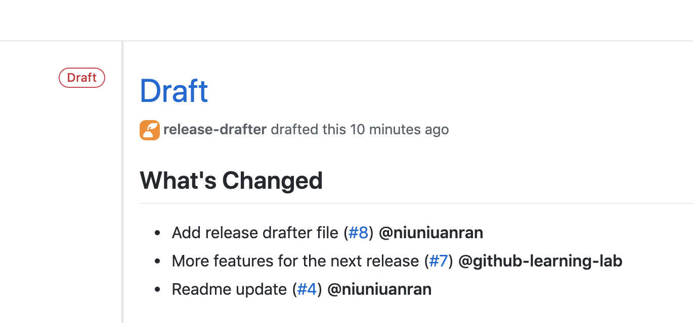
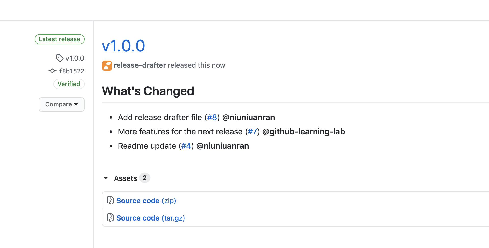

I was taking the Microsoft Learn module: Manage software delivery by using a release based workflow on GitHub. I will Learn to implement a release based workflow on GitHub using project boards, branches, and releases.
What is a release based workflow?
A release based workflow is a set of patterns and policies that focus on releasing software.
A release based workflow drives three different parts of the release cycle:
- managing the project,
- selecting a branching strategy,
- releasing to customers.
GitHub Project Boards
In GitHub, iterations are managed as projects.
The dominant feature of a project is its board. The board is the central plan of record for the iteration and contains all of the cards that are to be resolved.
A card can represent an issue, a pull request, or even just a generic note.
The card’s project status is integrated across the repository.
By using a project board, all stakeholders have an easy way to understand the status and velocity of a project. You can also create boards that are scoped to individual users or a collection of repositories owned by an organization.
Tracking specific milestones
Milestones are similar to project tracking in that there is an emphasis on the prioritized completion of issues and pull requests. However, where a project may be focused on the team’s process, a milestone is focused on the product.
Selecting a branching strategy
There are several strategies for managing releases. Some teams might use long-lived branches, like production, dev, and master. Some teams use simple feature branches, releasing from the master branch.
No one strategy is better than another. We always recommend being intentional about branches and reducing long-lived branches whenever possible.
Working with long-lived branches
A long-lived branch is a Git branch that is never deleted.
eg:
- master, release-v1.0, release-v2.0
- master, dev, production
Servicing long-lived branches
Git does offer an automated solution to apply certain updates into long-lived branches, without shoving all updates onto them, in the form of its cherry-pick command.
Protect release branches
You can protect release branches. This means you can protect branches from force pushes or accidental deletion. This is already configured in this repository.
Releasing to consumers
When a product version is ready to be released, GitHub simplifies the process of packaging it up and notifying consumers.
Create a release based workflow: GitHub Learning Lab
This repository contains my learning with GitHub Learning Lab.
GitHub Releases
GitHub Releases point to a specific commit. Releases can include release notes in Markdown, and attached binaries.
Pull Request shipping from release branch to master
You should open a pull request between your release branch and master as early as possible. It might be open for a long time, and that’s okay. The pull request corresponds to the work in the project board.
The pull request description should:
- Include a brief description of the pull request
- Include a task list of expected features
- Propose a ship date
This is the long-lived pull request created.
Short-living feature pull requests that have been merged into the release-v1.0 branch will be visible in the long-living, release-v1.0 -> master pull request.
Usually, you delete a branch after merging. The release branch is protected, so it cannot be deleted when you merge this pull request.
Release Drafter
Release Drafter drafts your next release notes as pull requests are merged into master. It is configured with .github/release-drafter.yml.
First Release
This is the first official release. As can been seen, the source code is provided as .zip and tar.gz packages. I can also choose to upload binary code to the release.